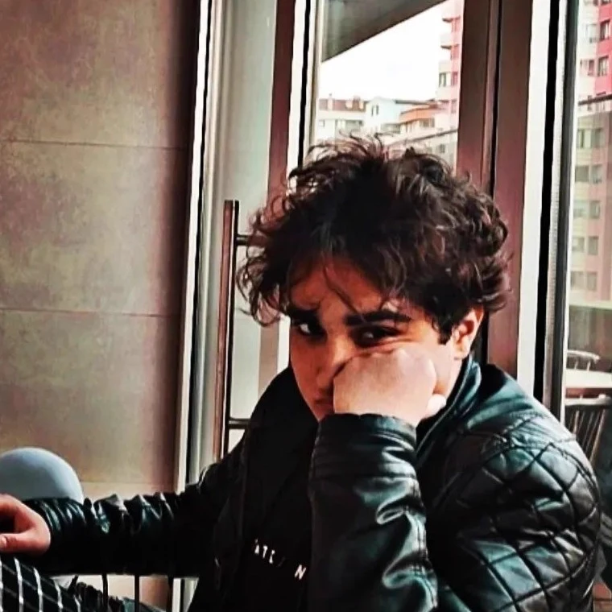

Şablon değil, projenin her katmanına özel kurulan sistemler.
Ben MISTIK. 21 yaşındayım ve yazılıma olan merakım çocukluğuma kadar
uzanıyor. Bu merakı son 1 yılda TrackDesk gibi gerçek, üretimde çalışan sistemlere
dönüştürdüm; karmaşık iş süreçlerini sezgisel, sinematik dijital deneyimlere çeviren
bir full-stack geliştirici ve sistem mimarıyım. Bir projenin fikrinden son kullanıcı
ekranına kadar her katmanını tek başıma kurarım.
Sahada çalışan satış ekipleri için gerçek zamanlı takip panelleri, kapsamlı bir
e-ticaret altyapısı, özel bütçe yönetimi ve ekran paylaşım sistemleri geliştirdim.
Hiçbiri hazır şablon değildi; her biri, o projenin gerçek ihtiyacına göre sıfırdan
inşa edildi. Kendimi geliştirmeye ve bu birikimi her projeyle büyütmeye devam
ediyorum.
Vizyonum
Her müşteriye özel kurulan sistemleri, en iyi şekilde tasarlamak ve hayata geçirmek.
Müşteri memnuniyetini seçenek değil, işin temeli saymak.
Hızlı, güvenilir ve arkasında durulan bir iş teslim etmek.

Bir projeyi sıfırdan mı kuruyoruz, yoksa yarım kalmış ya da hayal kırıklığına
uğratmış birini mi yeniden inşa ediyoruz — fark etmez. Tek hedef var:
ödediğin ücretin karşılığını gerçekten alman.
Yetenekler
Modern teknolojilerle güçlendirilmiş uçtan uca çözümler.
Frontend
HTML5, CSS3, JavaScript ES6+ ve React ile piksel hassasiyetinde, hızlı ve sezgisel arayüzler kurarım: animasyon, micro-interaction ve responsive tasarım dahil.
Backend
PHP 8, MySQL ve PDO ile güvenli oturum yönetimi kurarım. REST API entegrasyonları, ödeme akışları ve çok kullanıcılı sistem altyapısı bu işin doğal parçası — TrackDesk'te, 4 milyon TL'yi aşan kazancı gerçek zamanlı takip eden bir sistemle bunu kanıtladım.
Sistemler
E-ticaret platformları, CRM ve satış panelleri, bütçe takip uygulamaları, WebRTC gerçek zamanlı iletişim, AI entegrasyonları ve PWA.
Yaklaşım
Her proje sıfırdan, o projenin gerçek ihtiyacına özel kurulur. Hazır şablon yok; sadece senin işine biçilmiş, ölçeklenebilir bir sistem var.
HTML5
CSS3
JavaScript
React
PHP
MySQL
REST API
WebRTC
Three.js
PWA
Öne Çıkan Projeler
Canlı
TrackDesk
Sahada satış yapan işletmeler için baştan sona geliştirdiğim bir web paneli —
müşteri bakiyesi, sipariş ve tahsilat takibini tek ekranda topluyor. Şu an
gerçek bir işletmede kullanılıyor: 4 milyon TL'yi aşan kazancı, 1.000'den fazla
işlemle gerçek zamanlı takip ediyor.
PHP/MySQLVanilla JSPWA
Domain bekleniyor
Canlı
Sınava Bir Gün Kala
Bir müşterim için baştan sona geliştirip teslim ettiğim, LGS/YKS hazırlığa
odaklı birebir online özel ders platformu. Öğretmen pazaryeri, canlı video
dersler, motivasyon ve sınav kaygısı koçluğuyla uçtan uca bir eğitim deneyimi
sunuyor — eğitime yeni adım atmış olmasına rağmen şimdiden 6'dan fazla öğretmen,
3 koç, 50'yi aşkın öğrenci ve 500 bin TL'yi aşan kazançla büyüyor.